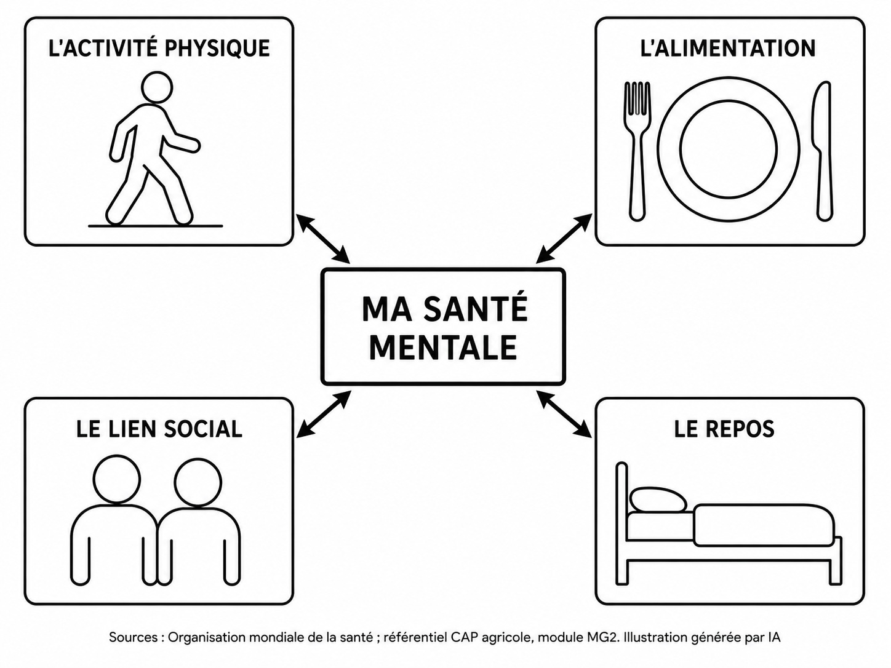

Réglages d’affichage
Hygiène de vie : sommeil, santé mentale, risques du métier
Repérer les facteurs agissant sur son mode de vie et énoncer des mesures simples de prévention.
Ce que tu sauras faire à la fin
- Expliquer le rôle du sommeil et repérer ce qui en dégrade la qualité.
- Énoncer les règles d'hygiène du chantier et la conduite à tenir face à une plaie souillée.
- Définir la santé mentale et savoir vers qui se tourner.
- Décrire le trajet du son dans l'oreille et évaluer une exposition au bruit.
Séance 1
Le sommeil
Objectif : Expliquer le rôle du sommeil et repérer ce qui en dégrade la qualité.
La situation
Benoît, 18 ans, est en stage chez monsieur Anglade, chef d'équipe en espaces verts. Il part au dépôt à 6 h 45, donc réveil à 6 h 15.
Hier soir, il a joué en ligne et s'est couché à 0 h 30.
Ce matin, monsieur Anglade lui a fait remarquer qu'il n'était pas attentif.
Marion, en stage dans la même entreprise, se couche vers 22 h 30 et tient la journée sans difficulté.
Benoît hausse les épaules : « Moi j'ai pas besoin de dormir, je récupère le week-end. »
DOC. 1 — Le sommeil
![Schéma en noir et blanc, en deux panneaux. Le panneau de gauche, titré le cycle de sommeil, montre trois ovales disposés en cercle et reliés par des flèches formant une boucle : un, sommeil lent léger ; deux, sommeil lent profond ; trois, sommeil paradoxal. Au centre du cercle est écrit : durée du cycle, 90 minutes. Sous le cercle, un encadré indique qu'une nuit comprend 4 à 6 cycles. Le panneau de droite, titré le rythme sur 24 heures, montre un profil de tête sans visage. À l'intérieur de la tête, une horloge graduée 6, 12, 18 et 24 heures, avec une moitié nuit et une moitié jour. À gauche, une lune et des étoiles, avec la mention : l'obscurité stimule la sécrétion de mélatonine. À droite, un soleil, avec la mention : la lumière du jour envoie un signal à l'horloge interne.](images/schema_cycle_sommeil.jpg)
Description écrite du document
Schéma en noir et blanc, en deux panneaux. Le panneau de gauche, titré le cycle de sommeil, montre trois ovales disposés en cercle et reliés par des flèches formant une boucle : un, sommeil lent léger ; deux, sommeil lent profond ; trois, sommeil paradoxal. Au centre du cercle est écrit : durée du cycle, 90 minutes. Sous le cercle, un encadré indique qu'une nuit comprend 4 à 6 cycles. Le panneau de droite, titré le rythme sur 24 heures, montre un profil de tête sans visage. À l'intérieur de la tête, une horloge graduée 6, 12, 18 et 24 heures, avec une moitié nuit et une moitié jour. À gauche, une lune et des étoiles, avec la mention : l'obscurité stimule la sécrétion de mélatonine. À droite, un soleil, avec la mention : la lumière du jour envoie un signal à l'horloge interne.
Le sommeil se déroule en cycles d'environ 90 minutes, répétés 4 à 6 fois par nuit.
Il participe notamment à la récupération physique, à la mémorisation, au fonctionnement des défenses immunitaires et à l'équilibre émotionnel.
Un jeune travailleur a généralement besoin d'environ 8 à 9 heures de sommeil par nuit.
Chez les adolescents et les jeunes adultes, l'endormissement peut naturellement se décaler vers le soir. Les écrans utilisés avant le coucher peuvent accentuer ce décalage.
Un manque de sommeil répété constitue une dette de sommeil.
Sources : Santé publique France, santepubliquefrance.fr ; Institut national du sommeil et de la vigilance, institut-sommeil-vigilance.org — consultés en août 2026. Illustration générée par IA.
1. À partir du document 1 et de la situation :
De 23 h à minuit : 1 h. De minuit à 6 h 30 : 6 h 30.
Au total : 7 h 30.
Un indice
Les deux heures figurent dans la situation : celle du coucher et celle du réveil.
Le corrigé
- De 0 h 30 à 6 h 15, cela fait 5 h 45.
Explication
La démarche
Compter de l'heure du coucher à l'heure du réveil, en passant par minuit.
L’erreur fréquente
Poser 6 h 15 moins 0 h 30 comme une soustraction de nombres décimaux. Une heure vaut 60 minutes, pas 100.
Un indice
Le deuxième paragraphe du document 1 en donne quatre.
Le corrigé
- Trois rôles parmi : la récupération physique ; la mémorisation ; le fonctionnement des défenses immunitaires ; l'équilibre émotionnel.
Explication
La démarche
Le deuxième paragraphe du document 1 en donne quatre, il suffit d'en choisir trois et de les recopier.
L’erreur fréquente
Écrire « se reposer », qui ne dit pas ce que l'organisme fait pendant ce temps.
DOC. 2 — Ce qui aide et ce qui gêne l'endormissement
| Facteur | Effet | Pourquoi |
|---|---|---|
| Les écrans le soir | Gêne | La lumière retarde la sécrétion de mélatonine. Il est recommandé de se déconnecter au moins une heure avant de se coucher |
| Des horaires réguliers | Aide | L'horloge interne anticipe l'heure du coucher |
| La caféine : café, thé, cola, boissons énergisantes | Gêne | Elle ne retarde pas seulement l'endormissement : elle fragmente le sommeil et provoque des micro-éveils |
| Un repas trop copieux le soir | Gêne | Les repas lourds ou difficiles à digérer perturbent le sommeil |
| L'activité physique dans la journée, et l'exposition à la lumière du jour | Aide | Elles aident l'horloge interne à se caler |
Sources : Institut national du sommeil et de la vigilance, pages « Sommeil et alimentation » et brochure « Le sommeil des jeunes 15-25 ans », institut-sommeil-vigilance.org, consultées en août 2026.
2. À partir du document 2 :
Un indice
Chaque ligne « Gêne » du tableau se retourne en changement, et chaque ligne « Aide » en donne un directement.
Le corrigé
- Deux changements parmi : arrêter les écrans au moins une heure avant de se coucher ; se coucher à heure régulière ; éviter le café, le cola et les boissons énergisantes en fin de journée ; éviter un repas trop copieux le soir ; pratiquer une activité physique dans la journée.
Explication
La démarche
Lire la colonne « Effet » du tableau. Ce qui gêne indique ce qu'il faut arrêter, ce qui aide indique ce qu'il faut faire.
L’erreur fréquente
Proposer « dormir plus », qui est le résultat attendu et non le changement à faire.
Le lexique de la séance 1
- Cycle de sommeil
- Suite d'environ 90 minutes qui se répète 4 à 6 fois par nuit.
- Dette de sommeil
- Manque de sommeil accumulé sur plusieurs nuits.
- Mélatonine
- Hormone favorisant l'endormissement, dont la sécrétion est retardée par la lumière.
- Horloge interne
- Système qui règle l'alternance entre la veille et le sommeil sur 24 heures.
Auto-évaluation de la séance 1
1. Une durée de sommeil trop courte, répétée plusieurs nuits, peut entraîner une dette de sommeil. Répondre en cochant une case.
Le corrigé. Vrai
Explication. C'est ce que le document 1 appelle une dette de sommeil.
2. Indiquer la durée approximative d'un cycle de sommeil, en cochant une seule case.
Le corrigé. 90 minutes
Explication. Le schéma du document 1 porte cette durée au centre du cycle.
3. Indiquer le besoin de sommeil d'un jeune travailleur. Répondre en rédigeant une phrase.
Le corrigé. Environ 8 à 9 heures par nuit.
Explication. C'est la durée indiquée dans le document 1.
Score : —
Séance 2
L'hygiène et les plaies
Objectif : Énoncer les règles d'hygiène du chantier et la conduite à tenir face à une plaie souillée.
La situation
En fin d'après-midi, Benoît se coupe la main en manipulant un tuteur. La plaie est superficielle et pleine de terre.
Il l'essuie sur son pantalon et continue.
Monsieur Anglade l'a vu : « Tu es à jour de tes vaccins ? »
DOC. 3 — L'hygiène quand on travaille dans la terre
Les règles du chantier. Se laver les mains avant de manger et après le travail. Se doucher après le chantier, plutôt que de rester en tenue de travail. Changer de vêtements de travail régulièrement, et ne pas les mélanger au linge de ville.
Face à une plaie, même minime. Nettoyer à l'eau et au savon. Si nécessaire, désinfecter. Couvrir d'un pansement. Signaler la blessure au responsable. Une plaie souillée de terre ne doit jamais être simplement essuyée. Procédure de chantier simplifiée.
Le tétanos. C'est une maladie grave due à une bactérie naturellement présente dans la terre. La contamination peut se faire par n'importe quelle blessure, coupure ou plaie banale, surtout au contact de la terre, notamment lors de travaux de jardinage. La maladie n'est pas contagieuse, et l'avoir eue ne protège pas contre une nouvelle infection.
La vaccination est la principale protection contre le tétanos, et la seule protection durable. Après une plaie souillée, il faut vérifier que sa vaccination est à jour et, si elle ne l'est pas, consulter un médecin.
Sources : Assurance Maladie, ameli.fr ; Vaccination Info Service, vaccination-info-service.fr — consultés en août 2026.
1. À partir du document 3 et de la situation :
| Élément | Numéro |
|---|---|
| Couvrir d'un pansement | |
| Nettoyer à l'eau et au savon | |
| Signaler la blessure au responsable | |
| Si nécessaire, désinfecter |
Un indice
Le deuxième paragraphe du document 3 donne les gestes dans l'ordre.
Le corrigé
- 1. Nettoyer à l'eau et au savon.
- 2. Si nécessaire, désinfecter.
- 3. Couvrir d'un pansement.
- 4. Signaler la blessure au responsable.
Explication
La démarche
Suivre l'ordre du document 3. On enlève d'abord la saleté, on désinfecte ce qui reste, on protège, puis on prévient.
L’erreur fréquente
Désinfecter avant de nettoyer. Le désinfectant agit mal sur une plaie encore pleine de terre.
Un indice
Le troisième paragraphe du document 3 dit où se trouve la bactérie et par où elle entre.
Le corrigé
- La bactérie du tétanos est naturellement présente dans la terre. Elle peut entrer par n'importe quelle blessure, même une petite coupure, dès qu'il y a contact avec la terre. La taille de la plaie ne protège donc de rien.
Explication
La démarche
Dire d'abord où se trouve la bactérie, puis par où elle entre.
L’erreur fréquente
Croire qu'il faut une plaie profonde ou un objet rouillé. Ce qui compte, c'est le contact avec la terre.
Un indice
Le dernier paragraphe du document 3 dit ce que protège la vaccination et ce qu'elle ne remplace pas.
Le corrigé
- Sa coupure a été en contact avec la terre, où se trouve la bactérie. Avoir déjà eu le tétanos ne protège pas d'une nouvelle infection : la vaccination est la seule protection durable. Si elle n'est pas à jour, il doit consulter un médecin.
Explication
La démarche
Relier la situation de Benoît, une plaie souillée de terre, à ce que le document dit de la vaccination.
L’erreur fréquente
Répondre « pour ne pas être malade », sans dire pourquoi la vaccination est la seule protection durable.
Le lexique de la séance 2
- Tétanos
- Maladie grave due à une bactérie présente dans la terre, qui pénètre par une plaie.
- Vaccination
- Principale protection contre le tétanos, et seule protection durable.
- Rappel
- Nouvelle injection destinée à maintenir la protection dans le temps.
- Plaie souillée
- Plaie en contact avec de la terre ou une matière sale.
Auto-évaluation de la séance 2
1. Avoir eu le tétanos protège contre une nouvelle infection. Répondre en cochant une case.
Le corrigé. Faux
Explication. Une première infection ne protège pas : seule la vaccination protège durablement.
2. Indiquer où se trouve la bactérie responsable du tétanos, en cochant une seule case.
Le corrigé. Dans la terre
Explication. La maladie n'est pas contagieuse : elle ne se transmet pas d'une personne à l'autre.
3. Indiquer la principale protection contre le tétanos. Répondre en rédigeant une phrase.
Le corrigé. La vaccination, avec des rappels réguliers.
Explication. C'est la seule protection durable.
Score : —
Séance 3
La santé mentale
Objectif : Définir la santé mentale, repérer ce qui l'entretient et savoir vers qui se tourner.
La situation
Novembre. Marion trouve que Benoît a changé depuis plusieurs semaines : il parle moins, ne vient plus au foyer, a arrêté le foot du mercredi.
Elle lui en parle. Il répond que tout va bien, qu'il est juste fatigué.
Marion ne sait pas quoi faire.
DOC. 4 — Ce qu'est la santé mentale

Description écrite du document
Schéma en noir et blanc. Au centre, un cadre porte la mention : ma santé mentale. Autour de lui, quatre blocs de taille identique, reliés au cadre central par des flèches à double pointe. En haut à gauche, l'activité physique, avec une silhouette sans visage qui marche. En haut à droite, l'alimentation, avec une assiette et des couverts. En bas à gauche, le lien social, avec deux silhouettes sans visage côte à côte. En bas à droite, le repos, avec un lit vide vu de profil.
La santé mentale, ce n'est pas seulement l'absence de maladie. L'Organisation mondiale de la santé la définit comme un état de bien-être mental qui permet de faire face aux difficultés de la vie, de réaliser ses capacités, d'apprendre, de travailler correctement et de contribuer à la vie de son groupe.
Elle s'entretient, comme la condition physique. Quatre appuis y contribuent : l'activité physique, l'alimentation, le lien social, le repos.
Ces quatre appuis se renforcent l'un l'autre : mieux dormir facilite l'activité physique, qui facilite le sommeil.
Sources : Organisation mondiale de la santé, citée par Santé publique France ; référentiel CAP agricole, module MG2, sous-objectif 2.2.2, pour la liste des quatre activités — consultés en août 2026. Illustration générée par IA.
DOC. 5 — Quand quelque chose ne va pas
Ce qui doit attirer l'attention, ce n'est pas une mauvaise journée : c'est ce qui dure et ce qui change les habitudes. Un retrait qui s'installe, l'abandon de ce qu'on aimait faire, une fatigue permanente, une irritabilité inhabituelle.
Pour en parler et être orienté : le médecin traitant, ou le service de prévention et de santé au travail de l'entreprise.
Pour voir un psychologue : Mon soutien psy, jusqu'à 12 séances par année civile, sans prescription médicale, en prenant rendez-vous sur l'annuaire d'ameli.fr.
Pour une structure gratuite : un centre médico-psychologique, accessible à partir de 16 ans.
En cas de détresse : le 3114, numéro national de prévention du suicide, gratuit, 24 heures sur 24.
Si c'est un camarade qui ne va pas bien : lui dire ce qu'on a remarqué, sans le forcer à parler, et lui proposer d'aller voir quelqu'un avec lui. Si l'inquiétude persiste, en parler soi-même à un adulte.
Sources : Assurance Maladie, ameli.fr ; ministère du Travail et des Solidarités, solidarites.gouv.fr — consultés en août 2026.
1. À partir des documents 4 et 5 et de la situation :
Un indice
Comparer ce que la situation décrit aux quatre appuis du document 4.
Le corrigé
- L'activité physique et le lien social.
Explication
La démarche
Benoît a arrêté le foot : c'est l'activité physique. Il ne vient plus au foyer et parle moins : c'est le lien social.
L’erreur fréquente
Cocher « le repos » parce que Benoît dit qu'il est fatigué. La situation ne décrit pas son sommeil : ce qu'il dit ne suffit pas à le savoir.
Un indice
Le dernier paragraphe du document 5 dit quoi faire pour un camarade.
Le corrigé
- Trois actions parmi : lui dire ce qu'elle a remarqué, sans le forcer à parler ; lui proposer d'aller voir quelqu'un avec lui ; lui parler des lieux où il peut être écouté ; en parler elle-même à un adulte si son inquiétude persiste.
Explication
La démarche
Le dernier paragraphe du document 5 propose une voie entre insister et laisser tomber : dire ce qu'on a remarqué, et proposer d'accompagner.
L’erreur fréquente
Répondre « le laisser tranquille » ou « insister jusqu'à ce qu'il parle ». Le document écarte ces deux réactions.
Le lexique de la séance 3
- Santé mentale
- État de bien-être mental qui permet de faire face aux difficultés de la vie, d'apprendre et de travailler.
- Lien social
- Fait de parler, d'être écouté et de faire partie d'un groupe.
- Mon soutien psy
- Dispositif permettant jusqu'à 12 séances de psychologue par année civile, sans prescription médicale.
- Centre médico-psychologique
- Structure publique de consultation gratuite, accessible à partir de 16 ans.
Auto-évaluation de la séance 3
1. La santé mentale, c'est seulement l'absence de maladie. Répondre en cochant une case.
Le corrigé. Faux
Explication. C'est un état de bien-être mental, qui s'entretient.
2. Indiquer le signal qui mérite le plus d'attention, en cochant une seule case.
Le corrigé. Un retrait qui s'installe depuis plusieurs semaines
Explication. Ce qui compte, c'est ce qui dure et ce qui change les habitudes.
3. Indiquer le numéro à appeler en cas de détresse. Répondre en rédigeant une phrase.
Le corrigé. Le 3114, gratuit, 24 heures sur 24.
Explication. C'est le numéro national de prévention du suicide.
Score : —
Séance 4
Le bruit et les risques du chantier
Objectif : Décrire le trajet du son dans l'oreille, évaluer une exposition au bruit et énoncer les mesures adaptées à chaque situation.
La situation
Journée de débroussaillage. Benoît utilise la débroussailleuse thermique trois heures dans la journée. Le niveau sonore est indiqué sur la plaque de la machine : 95 dB(A).
Il a laissé ses bouchons dans le camion : « Ça me gêne, et puis j'entends très bien. »
En fin de journée, il perçoit un sifflement dans les oreilles, qui disparaît le lendemain.
DOC. 6 — Le trajet du son dans l'oreille
![Coupe de l'oreille en noir et blanc, vue de face, divisée en trois zones par des traits verticaux. La zone de gauche est titrée oreille externe : elle montre le pavillon, puis le conduit auditif. Une onde sonore, dessinée comme une ligne ondulée, entre par la gauche et parcourt le conduit. La zone du milieu est titrée oreille moyenne : elle montre le tympan, qui ferme le conduit, puis les osselets. La zone de droite est titrée oreille interne : elle montre la cochlée, en forme de spirale, d'où part le nerf auditif qui rejoint le cerveau, dessiné en haut à droite.](images/schema_oreille_trajet_son.jpg)
Description écrite du document
Coupe de l'oreille en noir et blanc, vue de face, divisée en trois zones par des traits verticaux. La zone de gauche est titrée oreille externe : elle montre le pavillon, puis le conduit auditif. Une onde sonore, dessinée comme une ligne ondulée, entre par la gauche et parcourt le conduit. La zone du milieu est titrée oreille moyenne : elle montre le tympan, qui ferme le conduit, puis les osselets. La zone de droite est titrée oreille interne : elle montre la cochlée, en forme de spirale, d'où part le nerf auditif qui rejoint le cerveau, dessiné en haut à droite.
L'oreille comporte trois parties. L'oreille externe, le pavillon et le conduit auditif, capte le son. L'oreille moyenne, le tympan et les osselets, transmet les vibrations. L'oreille interne, la cochlée, transforme ces vibrations en influx nerveux, acheminé au cerveau par le nerf auditif.
La cochlée contient des cellules ciliées. Un bruit intense ou prolongé les détruit, et elles ne se régénèrent pas : la perte auditive est définitive. Elle s'installe sans douleur et progressivement, ce qui la rend difficile à percevoir soi-même.
Le sifflement ressenti après une exposition, appelé acouphène, et la sensation d'oreilles bouchées sont des signaux d'alerte.
Source : INRS, dossier « Bruit », inrs.fr, consulté en août 2026. Illustration générée par IA.
1. À partir du document 6 :
| Élément | Numéro |
|---|---|
| Les vibrations sont transmises aux osselets | |
| Le pavillon capte l'onde sonore | |
| L'influx nerveux est acheminé au cerveau par le nerf auditif | |
| L'onde sonore atteint le tympan et le fait vibrer | |
| L'onde sonore est transmise au conduit auditif | |
| Les vibrations atteignent la cochlée et y sont transformées en influx nerveux |
Un indice
Suivre l'onde sonore sur le schéma, de gauche à droite, en traversant les trois zones.
Le corrigé
- 1. Le pavillon capte l'onde sonore.
- 2. L'onde sonore est transmise au conduit auditif.
- 3. L'onde sonore atteint le tympan et le fait vibrer.
- 4. Les vibrations sont transmises aux osselets.
- 5. Les vibrations atteignent la cochlée et y sont transformées en influx nerveux.
- 6. L'influx nerveux est acheminé au cerveau par le nerf auditif.
Explication
La démarche
Suivre l'onde sonore sur le schéma, de gauche à droite, en traversant l'oreille externe, puis l'oreille moyenne, puis l'oreille interne.
L’erreur fréquente
Placer la cochlée avant le tympan. Le tympan ferme le conduit auditif ; la cochlée se trouve tout au fond, dans l'oreille interne.
Un indice
Le deuxième paragraphe du document 6 dit ce que le bruit détruit et ce qui devient impossible ensuite.
Le corrigé
- Le bruit détruit les cellules ciliées de la cochlée. Ces cellules ne se régénèrent pas. La perte est donc définitive, et elle s'installe sans douleur, ce qui la rend difficile à percevoir.
Explication
La démarche
Nommer les cellules atteintes, puis dire ce qui les rend irremplaçables.
L’erreur fréquente
Répondre « parce que le bruit est trop fort ». Ce n'est pas l'intensité qui rend la perte définitive, c'est le fait que les cellules détruites ne repoussent pas.
DOC. 7 — Niveau sonore et durée d'exposition
| Niveau sonore | Durée d'exposition quotidienne équivalente |
|---|---|
| 80 dB(A) | 8 heures |
| 83 dB(A) | 4 heures |
| 86 dB(A) | 2 heures |
| 89 dB(A) | 1 heure |
| 92 dB(A) | 30 minutes |
| 95 dB(A) | 15 minutes |
Chaque augmentation de 3 décibels divise par deux la durée équivalente. Sur une journée de travail, la réglementation fixe trois seuils. À partir de 80 dB(A) d'exposition quotidienne, l'employeur met des protections auditives à disposition et informe les salariés. À partir de 85 dB(A), il doit faire effectivement utiliser ces protections. 87 dB(A) est la valeur limite d'exposition, protection auditive prise en compte.
Sources : INRS, « Bruit : exposition au risque » et « Bruit : réglementation », inrs.fr, consultés en août 2026.
2. À partir du document 7 et de la situation :
Un indice
Le niveau sonore de la machine figure dans la situation. La durée équivalente se lit dans la dernière ligne du tableau.
Le corrigé
- À 95 dB(A), la durée équivalente est de 15 minutes. Benoît utilise la machine 3 heures, soit 180 minutes.
- 180 ÷ 15 = 12. Sa durée d'utilisation est 12 fois supérieure.
Explication
La démarche
Convertir les trois heures en minutes, puis diviser par la durée lue dans le tableau.
L’erreur fréquente
Diviser 3 par 15. Les deux durées doivent être exprimées dans la même unité.
DOC. 8 — Cinq situations de chantier, cinq risques
| Situation | Risque principal | Ce qu'il faut faire |
|---|---|---|
| Débroussaillage | Bruit, projections | Porter les protections prévues pour ce poste : protection auditive, protection des yeux et du visage |
| Application d'un produit de traitement | Risque chimique : inhalation ou contact avec la peau | Porter les équipements prévus par l'évaluation des risques et par les indications du produit, et respecter le délai avant de revenir sur la zone |
| Utilisation d'un produit ou rejet sur le chantier | Pollution du sol, de l'eau ou de l'air | Respecter les consignes du produit, éviter les rejets, et récupérer les déchets ou résidus selon les procédures prévues |
| Soufflage des feuilles | Bruit, poussières | Porter les protections prévues pour ce poste |
| Port de charges, gestes répétés | Troubles musculo-squelettiques | Alterner les tâches, plier les jambes pour porter, utiliser les aides au levage |
Document pédagogique construit à partir des dossiers INRS sur le bruit, le risque chimique, les chutes et les troubles musculo-squelettiques, inrs.fr, consultés en août 2026.
3. À partir du document 8 :
Un indice
Le tableau donne le risque dans la deuxième colonne et la mesure dans la troisième.
Le corrigé
- Deux situations parmi les cinq, avec pour chacune le risque de la deuxième colonne et la mesure de la troisième.
Explication
La démarche
Choisir deux situations, lire le risque, puis la mesure qui lui répond.
L’erreur fréquente
Proposer une protection qui ne correspond pas au risque. Une protection auditive ne protège pas d'un produit chimique.
Le lexique de la séance 4
- Cellules ciliées
- Cellules de la cochlée qui captent le son ; détruites par le bruit, elles ne se régénèrent pas.
- Acouphène
- Sifflement perçu en l'absence de tout son, signal d'alerte après une exposition au bruit.
- Décibel
- Unité de mesure du niveau sonore.
- Risque chimique
- Risque lié à l'inhalation d'un produit ou à son contact avec la peau.
- Pollution des milieux ambiants
- Atteinte du sol, de l'eau ou de l'air par des produits ou des rejets.
Vocabulaire d’appui
- Équipement de protection individuelle
- Protection adaptée à un risque précis, fournie par l'employeur.
Auto-évaluation de la séance 4
1. On finit par s'habituer au bruit et l'oreille se protège toute seule. Répondre en cochant une case.
Le corrigé. Faux
Explication. Les cellules ciliées détruites ne se régénèrent pas.
2. Indiquer la durée d'exposition quotidienne équivalente à 95 dB(A), en cochant une seule case.
Le corrigé. 15 minutes
Explication. C'est la dernière ligne du tableau du document 7.
3. Expliquer pourquoi une perte auditive due au bruit est définitive. Répondre en rédigeant une phrase.
Le corrigé. Parce que les cellules ciliées détruites ne se régénèrent pas.
Explication. C'est ce que dit le deuxième paragraphe du document 6.
Score : —